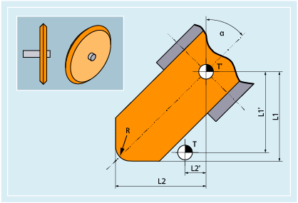

Innerhalb der Werkzeuggruppe "Schleifwerkzeuge" gibt es folgende Werkzeugtypen:
400 | Umfangsschleifscheibe |
401 | Umfangsschleifscheibe mit Überwachung |
402 | Umfangsschleifscheibe ohne Überwachung ohne Basismaß (WZV) |
403 | Umfangsschleifscheibe mit Überwachung ohne Basismaß für Schleifscheibenumfangsgeschwindigkeit SUG |
410 | Planscheibe |
411 | Planscheibe (WZV) mit Überwachung |
412 | Planscheibe (WZV) ohne Überwachung |
413 | Planscheibe mit Überwachung ohne Basismaß für Schleifscheibenumfangsgeschwindigkeit SUG |
490 | Abrichter |
Die folgende Abbildung gibt einen Überblick, welche Werkzeugparameter bei Schleifwerkzeugen in den Korrekturspeicher eingetragen werden:
T | Werkzeugträgerbezugspunkt |
T' | Werkzeughalterbezugspunkt |
L1 | Geometrie - Länge 1 |
L1' | Basismaß - Länge 1 |
L2 | Geometrie - Länge 2 |
L2' | Basismaß - Länge 2 |
R | Radius |
α | Winkel der schrägen Scheibe |
Schneidenspezifische Parameter | Bedeutung |
|---|---|
$TC_DP1 | Werkzeugtyp 4xy |
$TC_DP2 | Schneidenlage |
$TC_DP3 | Geometrie Länge 1 |
$TC_DP4 | Geometrie Länge 2 |
$TC_DP6 | Radius |
$TC_DP21 | Basismaß Länge 1 |
$TC_DP22 | Basismaß Länge 2 |
| |
Werkzeugspezifische Parameter | Bedeutung |
|---|---|
$TC_TPG1 | Spindelnummer |
$TC_TPG2 | Verkettungsvorschrift 1) |
$TC_TPG3 | Minimaler Scheibenradius |
$TC_TPG4 | Minimale Scheibenbreite |
$TC_TPG5 | Aktuelle Scheibenbreite |
$TC_TPG6 | Maximale Drehzahl |
$TC_TPG7 | Maximale Umfangsgeschwindigkeit |
$TC_TPG8 | Winkel der schrägen Scheibe |
$TC_TPG9 | Parameter-Nummer für Radiusberechnung |
$TC_TPG_DRSPATH | Verzeichnispfad auf das Abrichtprogramm |
$TC_TPG_DRSPROG | Abrichtprogrammname |
Siehe auch:
Übersicht